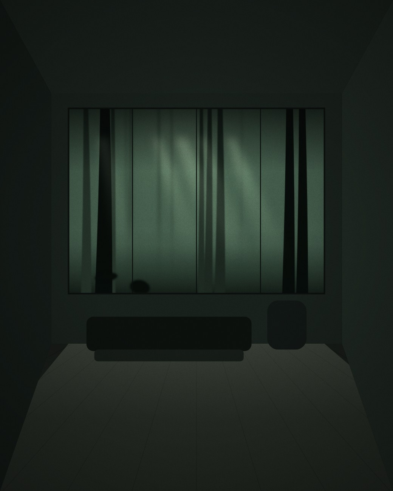

<title>沐森 MUSEN · 台中七期</title>
<style>
  /* 刻意只做暗場單一主題：高階建案文宣的視覺世界就是夜色，
     做亮色版反而會稀釋掉私宅感。這是選擇，不是遺漏。 */
  :root {
    color-scheme: dark;
    --ink:      #070b09;
    --ink-2:    #0c1210;
    --surface:  #111815;
    --surface-a: rgba(7,11,9,0.82);
    --line:     #1c2721;
    --line-2:   #2b3a32;
    --text:     #e9eee9;
    --text-2:   #8b9c92;
    --text-3:   #5d6b64;
    --gold:     #b49164;
    --gold-2:   #d9be8e;

    --serif: "Noto Serif TC", "Songti TC", "Source Han Serif TC", Georgia, "Microsoft JhengHei", serif;
    --sans:  "PingFang TC", "Microsoft JhengHei", "Noto Sans TC", -apple-system, sans-serif;
  }

  * { box-sizing: border-box; }
  html { scroll-behavior: smooth; }
  body {
    margin: 0;
    background: var(--ink);
    color: var(--text);
    font-family: var(--sans);
    font-size: 15px;
    line-height: 1.9;
    -webkit-font-smoothing: antialiased;
  }
  a { color: inherit; }
  ::selection { background: var(--gold); color: var(--ink); }

  .shell { max-width: 1080px; margin: 0 auto; padding: 0 44px; }

  /* ── 頂列 ── */
  .topbar {
    position: sticky; top: 0; z-index: 40;
    background: var(--surface-a);
    backdrop-filter: blur(14px);
    border-bottom: 1px solid var(--line);
  }
  .topbar-inner {
    max-width: 1080px; margin: 0 auto; padding: 0 44px;
    height: 68px; display: flex; align-items: center; justify-content: space-between;
  }
  .mark {
    font-family: var(--serif); font-size: 19px; font-weight: 600;
    letter-spacing: 0.3em; margin-right: -0.3em;
  }
  .topbar nav { display: flex; gap: 32px; }
  .topbar nav a {
    font-size: 13.5px; color: var(--text-2); text-decoration: none; letter-spacing: 0.08em;
  }
  .topbar nav a:hover, .topbar nav a:focus-visible { color: var(--gold-2); }

  /* ── 首屏 ── */
  .hero {
    position: relative;
    min-height: calc(100vh - 68px);
    display: flex; align-items: center;
    padding: 90px 0 100px;
    overflow: hidden;
  }
  .hero-bg { position: absolute; inset: 0; z-index: 0; }
  .hero-bg img { width: 100%; height: 100%; object-fit: cover; display: block; }
  .hero-veil {
    position: absolute; inset: 0; z-index: 1; pointer-events: none;
    background:
      linear-gradient(to right, rgba(7,11,9,0.94) 0%, rgba(7,11,9,0.66) 44%, rgba(7,11,9,0.08) 100%),
      linear-gradient(to bottom, rgba(7,11,9,0.5) 0%, rgba(7,11,9,0) 28%, rgba(7,11,9,0) 72%, rgba(7,11,9,0.76) 100%);
  }
  .hero-inner { position: relative; z-index: 2; width: 100%; }

  .hero .place {
    font-size: 13.5px; letter-spacing: 0.22em; color: var(--gold);
    margin: 0 0 30px;
  }
  .hero h1 {
    font-family: var(--serif);
    font-size: clamp(70px, 12vw, 146px);
    font-weight: 500; margin: 0;
    letter-spacing: 0.14em; line-height: 1;
    margin-right: -0.14em;
  }
  .hero .latin {
    font-family: var(--serif); font-size: clamp(12px, 1.3vw, 15px);
    letter-spacing: 0.42em; color: var(--text-3);
    margin: 24px 0 0; margin-right: -0.42em;
  }
  .hero .tagline {
    font-family: var(--serif); font-size: clamp(21px, 2.6vw, 30px);
    margin: 48px 0 0; letter-spacing: 0.14em; font-weight: 400;
  }
  .hero .lead {
    margin: 24px 0 0; font-size: 15px; line-height: 2.15;
    max-width: 27em; color: var(--text-2); letter-spacing: 0.03em;
  }

  /* ── 區塊：靠留白與一條細線分段，不做卡片 ── */
  .band { padding: 128px 0; border-top: 1px solid var(--line); }
  .band > .shell > h2 {
    font-family: var(--serif); font-size: clamp(25px, 3vw, 32px);
    font-weight: 500; letter-spacing: 0.14em; margin: 0 0 8px;
  }
  .band > .shell > .sub {
    margin: 0 0 62px; font-size: 14px; color: var(--text-3); letter-spacing: 0.05em;
  }

  /* ── 五分鐘：主打賣點自己一個版面 ── */
  .distance { padding: 122px 0; border-top: 1px solid var(--line); background: var(--ink-2); }
  .dist-top { display: grid; grid-template-columns: auto 1fr; gap: 58px; align-items: end; }
  .numeral {
    display: flex; align-items: baseline; gap: 16px;
    font-family: var(--serif); color: var(--gold-2); line-height: 0.8;
  }
  .numeral b { font-size: clamp(118px, 19vw, 228px); font-weight: 400; letter-spacing: -0.02em; }
  .numeral em { font-style: normal; font-size: clamp(20px, 2.4vw, 29px); letter-spacing: 0.2em; color: var(--text); }
  .dist-say { padding-bottom: 22px; }
  .dist-say .to {
    font-family: var(--serif); font-size: clamp(21px, 2.6vw, 29px);
    letter-spacing: 0.13em; margin: 0 0 14px;
  }
  .dist-say p { margin: 0; color: var(--text-2); font-size: 14.5px; letter-spacing: 0.03em; max-width: 30em; }

  .index { list-style: none; margin: 68px 0 0; padding: 0; display: grid; grid-template-columns: 1fr 1fr; gap: 0 76px; }
  .index li {
    display: flex; align-items: baseline; gap: 14px;
    padding: 18px 0; border-bottom: 1px solid var(--line);
  }
  .index .n { font-size: 14.5px; letter-spacing: 0.05em; white-space: nowrap; }
  .index .dots { flex: 1; border-bottom: 1px dotted var(--line-2); transform: translateY(-5px); }
  .index .v { font-size: 13.5px; color: var(--gold); letter-spacing: 0.05em; white-space: nowrap; font-variant-numeric: tabular-nums; }

  /* ── 理念 ── */
  .quote {
    font-family: var(--serif); font-size: clamp(24px, 3vw, 34px);
    line-height: 2; margin: 0 0 46px; letter-spacing: 0.1em;
    max-width: 20em; font-weight: 400;
  }
  .concept-body { max-width: 40em; }
  .concept-body p {
    font-size: 15px; line-height: 2.3; color: var(--text-2);
    letter-spacing: 0.03em; margin: 0 0 22px;
  }

  /* ── 規劃特色：三段文字，不是三張卡片 ── */
  .marks { display: grid; grid-template-columns: repeat(3, 1fr); gap: 56px; }
  .marks h3 {
    font-family: var(--serif); font-size: 20px; font-weight: 500;
    letter-spacing: 0.11em; margin: 0 0 8px;
    padding-bottom: 16px; border-bottom: 1px solid var(--line-2);
  }
  .marks p { margin: 18px 0 0; font-size: 13.5px; color: var(--text-2); line-height: 2.1; letter-spacing: 0.02em; }

  /* ── 空間圖輯 ── */
  .plates { display: grid; grid-template-columns: repeat(3, 1fr); gap: 30px; }
  .plate { margin: 0; }
  .plate .frame { overflow: hidden; aspect-ratio: 4 / 5; background: var(--surface); }
  .plate .frame img { width: 100%; height: 100%; object-fit: cover; display: block; }
  .plate figcaption {
    margin-top: 16px; font-family: var(--serif); font-size: 15px;
    letter-spacing: 0.11em; color: var(--text);
  }
  .plate figcaption small {
    display: block; margin-top: 3px; font-family: var(--sans);
    font-size: 12.5px; letter-spacing: 0.04em; color: var(--text-3);
  }

  /* ── 格局 ── */
  .schedule { width: 100%; border-collapse: collapse; }
  .schedule caption {
    caption-side: bottom; text-align: left; font-size: 13px; color: var(--text-3);
    padding-top: 22px; letter-spacing: 0.04em;
  }
  .schedule th {
    text-align: left; font-size: 13px; letter-spacing: 0.08em;
    color: var(--text-3); font-weight: 400;
    border-bottom: 1px solid var(--line-2); padding: 0 18px 14px 0;
  }
  .schedule th:last-child, .schedule td:last-child { text-align: right; padding-right: 0; }
  .schedule td { padding: 24px 18px 24px 0; border-bottom: 1px solid var(--line); font-size: 14.5px; letter-spacing: 0.03em; }
  .schedule tbody tr:last-child td { border-bottom: none; }
  .schedule .unit { font-family: var(--serif); letter-spacing: 0.09em; font-size: 16px; }
  .schedule .fig { font-variant-numeric: tabular-nums; font-size: 14px; color: var(--gold); }

  /* ── 貸款試算 ── */
  .loan-grid { display: grid; grid-template-columns: 1fr 1fr; gap: 76px; align-items: start; }
  .loan-form { display: grid; gap: 26px; }
  .loan-form .field { display: grid; gap: 10px; }
  .loan-form label {
    font-size: 12.5px; letter-spacing: 0.1em; color: var(--text-3);
  }
  .loan-form input, .loan-form select {
    appearance: none; -webkit-appearance: none;
    background: transparent; color: var(--text);
    border: none; border-bottom: 1px solid var(--line-2);
    padding: 10px 2px; font-size: 16px; font-family: var(--sans);
    letter-spacing: 0.03em; font-variant-numeric: tabular-nums;
  }
  .loan-form select { cursor: pointer; }
  .loan-form input:focus, .loan-form select:focus {
    outline: none; border-bottom-color: var(--gold);
  }
  .cta-block {
    width: 100%; text-align: center; background: transparent;
    font-family: inherit; cursor: pointer; margin-top: 4px;
  }
  .loan-result { padding-top: 2px; }
  .loan-result .index { margin-top: 0; }
  .lead-gate {
    margin-top: 46px; padding-top: 38px; border-top: 1px solid var(--line);
  }
  .lead-copy {
    margin: 0 0 22px; font-size: 14px; line-height: 2; color: var(--text-2);
    letter-spacing: 0.03em; max-width: 30em;
  }
  .lead-form { display: grid; grid-template-columns: 1fr 1fr; gap: 18px 20px; }
  .lead-form input {
    background: transparent; color: var(--text);
    border: none; border-bottom: 1px solid var(--line-2);
    padding: 10px 2px; font-size: 14.5px; font-family: var(--sans);
    letter-spacing: 0.03em;
  }
  .lead-form input::placeholder { color: var(--text-3); }
  .lead-form input:focus { outline: none; border-bottom-color: var(--gold); }
  .lead-form .cta { grid-column: 1 / -1; width: 100%; text-align: center; background: transparent; font-family: inherit; cursor: pointer; }
  .lead-done {
    margin: 0; font-size: 14px; color: var(--gold-2); letter-spacing: 0.03em; line-height: 2;
  }

  /* ── 頁尾 ── */
  .foot { border-top: 1px solid var(--line); padding: 98px 0 78px; }
  .foot-grid { display: grid; grid-template-columns: 1fr auto; gap: 56px; align-items: end; }
  .foot .mark { display: block; margin-bottom: 26px; }
  .foot p { margin: 0 0 9px; font-size: 13.5px; color: var(--text-2); letter-spacing: 0.04em; }
  .cta {
    display: inline-block; text-decoration: none;
    border: 1px solid var(--gold); color: var(--gold-2);
    padding: 16px 42px; font-size: 13.5px; letter-spacing: 0.2em;
    transition: background .35s ease, color .35s ease;
  }
  .cta:hover, .cta:focus-visible { background: var(--gold); color: var(--ink); }
  .fine {
    margin-top: 64px; padding-top: 26px; border-top: 1px solid var(--line);
    font-size: 12px; color: var(--text-3); letter-spacing: 0.04em; line-height: 2;
  }

  :focus-visible { outline: 1px solid var(--gold); outline-offset: 4px; }

  @media (max-width: 940px) {
    .dist-top { grid-template-columns: 1fr; gap: 26px; align-items: start; }
    .dist-say { padding-bottom: 0; }
    .index { grid-template-columns: 1fr; gap: 0; }
    .marks { grid-template-columns: 1fr; gap: 46px; }
    .plates { grid-template-columns: 1fr; gap: 36px; }
    .plate .frame { aspect-ratio: 16 / 10; }
    .loan-grid { grid-template-columns: 1fr; gap: 54px; }
    .topbar nav { gap: 20px; }
  }
  @media (max-width: 620px) {
    .shell, .topbar-inner { padding-left: 24px; padding-right: 24px; }
    .band, .distance { padding: 84px 0; }
    .topbar nav a:nth-child(n+3) { display: none; }
    .foot-grid { grid-template-columns: 1fr; align-items: start; }
    .lead-form { grid-template-columns: 1fr; }
  }
</style>

<header class="topbar">
  <div class="topbar-inner">
    <span class="mark">沐森</span>
    <nav>
      <a href="#distance">生活尺度</a>
      <a href="#concept">建築理念</a>
      <a href="#design">規劃特色</a>
      <a href="#spaces">空間圖輯</a>
      <a href="#plans">格局配置</a>
      <a href="#calc">貸款試算</a>
    </nav>
  </div>
</header>

<section class="hero">
  <div class="hero-bg"></div>
  <div class="hero-veil"></div>
  <div class="hero-inner">
    <div class="shell">
      <p class="place">台中 · 七期經貿園區</p>
      <h1>沐森</h1>
      <p class="latin">MUSEN RESIDENCE</p>
      <p class="tagline">在城市的中心，養一片森林</p>
      <p class="lead">步行五分鐘抵達台中市政府站。基地退縮十二公尺，讓出一整座森林中庭，作為每日返家的前景。</p>
    </div>
  </div>
</section>

<main>
  <section class="distance" id="distance">
    <div class="shell">
      <div class="dist-top">
        <div class="numeral"><b>5</b><em>分鐘</em></div>
        <div class="dist-say">
          <p class="to">步行抵達 台中市政府站</p>
          <p>捷運綠線市政府站 1 號出口，沿市政北二路直行。不必開車、不必轉乘，把通勤還原成一段散步。</p>
        </div>
      </div>
      <ul class="index">
        <li><span class="n">捷運市政府站</span><span class="dots"></span><span class="v">步行 5 分</span></li>
        <li><span class="n">市政公園</span><span class="dots"></span><span class="v">步行 3 分</span></li>
        <li><span class="n">新光三越 · 大遠百</span><span class="dots"></span><span class="v">步行 6 分</span></li>
        <li><span class="n">台灣大道</span><span class="dots"></span><span class="v">車程 3 分</span></li>
        <li><span class="n">國家歌劇院</span><span class="dots"></span><span class="v">車程 8 分</span></li>
        <li><span class="n">台中榮總</span><span class="dots"></span><span class="v">車程 12 分</span></li>
      </ul>
    </div>
  </section>

  <section class="band" id="concept">
    <div class="shell">
      <h2>建築理念</h2>
      <p class="sub">關於我們為什麼留下這片中庭。</p>
      <p class="quote">城市給了效率，<br />森林把尺度還給你。</p>
      <div class="concept-body">
        <p>七期是台中密度最高的一塊土地。我們沒有把它用滿——基地自街廓退縮十二公尺，讓出二百四十坪的森林中庭，種入九十六株喬木。從市政北二路轉進來，會先走過一段樹蔭，才抵達門廳。</p>
        <p>建築量體壓低至地上十四層，一層一戶。所有主要開窗面朝向中庭，把街道的聲音與視線留在外面。捷運五分鐘的方便留著，都市的紛擾請止步於此。</p>
      </div>
    </div>
  </section>

  <section class="band" id="design">
    <div class="shell">
      <h2>規劃特色</h2>
      <p class="sub">三件決定了日常樣貌的事。</p>
      <div class="marks">
        <div>
          <h3>森林中庭</h3>
          <p>二百四十坪基地退縮，九十六株喬木構成三層次林相。地面層不設圍牆，以植栽與高差界定領域。</p>
        </div>
        <div>
          <h3>一層一戶</h3>
          <p>電梯直達私人玄關，無公共走廊。雙層隔音牆體與氣密窗，將室內背景音量控制於 35 分貝以下。</p>
        </div>
        <div>
          <h3>全齡機能</h3>
          <p>會館設交誼廳、健身房與長者友善的復健水療區。地下二層規劃一戶兩車位與獨立儲藏空間。</p>
        </div>
      </div>
    </div>
  </section>

  <section class="band" id="spaces">
    <div class="shell">
      <h2>空間圖輯</h2>
      <p class="sub">室內實景為示意，圖片可自行替換。</p>
      <div class="plates">
        <figure class="plate">
          <div class="frame"></div>
          <figcaption>起居<small>面庭落地窗</small></figcaption>
        </figure>
        <figure class="plate">
          <div class="frame"></div>
          <figcaption>主臥<small>側向樹影</small></figcaption>
        </figure>
        <figure class="plate">
          <div class="frame"></div>
          <figcaption>中庭<small>晨霧林徑</small></figcaption>
        </figure>
      </div>
    </div>
  </section>

  <section class="band" id="plans">
    <div class="shell">
      <h2>格局配置</h2>
      <p class="sub">全案 44 戶，地上十四層、地下三層。</p>
      <table class="schedule">
        <caption>坪數為權狀面積示意值，實際以合約與登記為準。</caption>
        <thead>
          <tr><th>戶型</th><th>格局</th><th>坪數</th><th>戶數</th></tr>
        </thead>
        <tbody>
          <tr><td class="unit">標準層 · 四房</td><td>4 房 2 廳 3 衛</td><td class="fig">68.4 坪</td><td class="fig">18</td></tr>
          <tr><td class="unit">景觀層 · 四房</td><td>4 房 2 廳 4 衛</td><td class="fig">82.6 坪</td><td class="fig">16</td></tr>
          <tr><td class="unit">樓中樓</td><td>5 房 3 廳 4 衛</td><td class="fig">118.0 坪</td><td class="fig">8</td></tr>
          <tr><td class="unit">頂層一戶</td><td>5 房 3 廳 5 衛 · 私人露臺</td><td class="fig">156.2 坪</td><td class="fig">2</td></tr>
        </tbody>
      </table>
    </div>
  </section>

  <section class="band" id="calc">
    <div class="shell">
      <h2>貸款試算</h2>
      <p class="sub">試算僅供參考，實際貸款成數、利率與核貸額度以銀行審核結果為準。</p>
      <div class="loan-grid">
        <form class="loan-form" id="loanForm">
          <div class="field">
            <label for="price">房屋總價（萬元）</label>
            <input type="number" id="price" min="0" step="10" value="1800" required>
          </div>
          <div class="field">
            <label for="downPct">自備款成數</label>
            <select id="downPct">
              <option value="20">2 成（20%）</option>
              <option value="30" selected>3 成（30%）</option>
              <option value="40">4 成（40%）</option>
            </select>
          </div>
          <div class="field">
            <label for="rate">貸款年利率（%）</label>
            <input type="number" id="rate" min="0" step="0.01" value="2.15" required>
          </div>
          <div class="field">
            <label for="years">貸款年限</label>
            <select id="years">
              <option value="20">20 年</option>
              <option value="30" selected>30 年</option>
              <option value="40">40 年</option>
            </select>
          </div>
          <button type="submit" class="cta cta-block">開始試算</button>
        </form>

        <div class="loan-result" id="loanResult" hidden>
          <ul class="index">
            <li><span class="n">自備款</span><span class="dots"></span><span class="v" id="rDown">—</span></li>
            <li><span class="n">貸款金額</span><span class="dots"></span><span class="v" id="rLoan">—</span></li>
            <li><span class="n">每月本息攤還</span><span class="dots"></span><span class="v" id="rMonthly">—</span></li>
          </ul>

          <div class="lead-gate">
            <p class="lead-copy">想進一步降低月負擔？留下聯絡方式，讓專屬理財顧問依您的財力狀況，規劃可爭取的利率與成數，並提供客製化試算報告。</p>
            <form class="lead-form" id="leadForm">
              <input type="text" id="leadName" placeholder="姓名" required>
              <input type="tel" id="leadPhone" placeholder="聯絡電話" required pattern="[0-9\-+ ]{8,}">
              <button type="submit" class="cta">預約專屬試算諮詢</button>
            </form>
            <p class="lead-done" id="leadDone" hidden>已收到您的資料，專屬理財顧問將於一個工作日內與您聯繫。</p>
          </div>
        </div>
      </div>
    </div>
  </section>
</main>

<footer class="foot" id="contact">
  <div class="shell">
    <div class="foot-grid">
      <div>
        <span class="mark">沐森</span>
        <p>接待會館｜台中市西屯區市政北二路 168 號</p>
        <p>預約制賞屋｜每日 11:00 – 19:00</p>
      </div>
      <a class="cta" href="#">預約專人導覽</a>
    </div>
    <p class="fine">本頁建案名稱、地址、規格與聯絡資訊均為虛構，非真實銷售資訊。距離與時間為示意值，室內圖片為示意圖。</p>
  </div>
</footer>

<script>
  // ── 自備款與月負擔試算 ──
  // 純前端示範：試算結果即時顯示、不設任何閱覽門檻；
  // 「留下聯絡方式」只出現在試算之後，作為索取客製化方案的加值誘因，
  // 藉此提高訪客留名意願，而不是用門檻擋住基本試算（那樣只會提高跳出率）。
  (function () {
    var loanForm   = document.getElementById('loanForm');
    var loanResult = document.getElementById('loanResult');
    var leadForm   = document.getElementById('leadForm');
    var leadDone   = document.getElementById('leadDone');

    var fmtWan = function (wan) {
      return Math.round(wan).toLocaleString('zh-Hant-TW') + ' 萬元';
    };
    var fmtNT = function (nt) {
      return 'NT$ ' + Math.round(nt).toLocaleString('zh-Hant-TW') + ' /月';
    };

    loanForm.addEventListener('submit', function (e) {
      e.preventDefault();

      var priceWan = parseFloat(document.getElementById('price').value) || 0;
      var downPct  = parseFloat(document.getElementById('downPct').value) || 0;
      var ratePct  = parseFloat(document.getElementById('rate').value) || 0;
      var years    = parseInt(document.getElementById('years').value, 10) || 30;

      var downWan = priceWan * downPct / 100;
      var loanWan = priceWan - downWan;
      var loanNT  = loanWan * 10000;

      var monthlyRate = ratePct / 100 / 12;
      var months = years * 12;
      var monthlyPay;
      if (monthlyRate === 0) {
        monthlyPay = loanNT / months;
      } else {
        monthlyPay = loanNT * monthlyRate / (1 - Math.pow(1 + monthlyRate, -months));
      }

      document.getElementById('rDown').textContent    = fmtWan(downWan);
      document.getElementById('rLoan').textContent     = fmtWan(loanWan);
      document.getElementById('rMonthly').textContent  = fmtNT(monthlyPay);

      loanResult.hidden = false;
      leadDone.hidden = true;
      leadForm.hidden = false;
      leadForm.reset();
    });

    leadForm.addEventListener('submit', function (e) {
      e.preventDefault();
      // 實際上線時，這裡改為送出至後端 API 或 CRM，例如：
      // fetch('/api/leads', { method: 'POST', body: JSON.stringify({...}) })
      // 目前僅作前端示範，直接顯示已收件訊息。
      leadForm.hidden = true;
      leadDone.hidden = false;
    });
  })();
</script>
